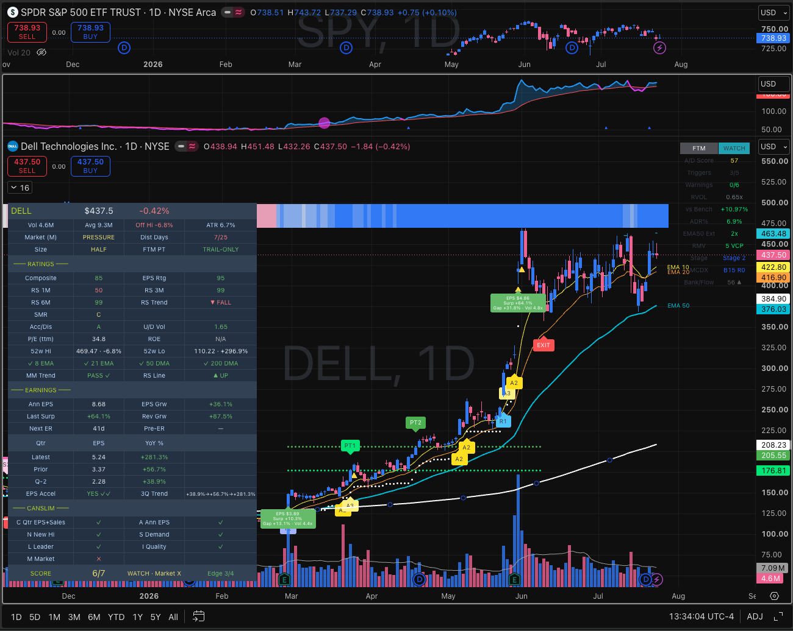

FTM Plus
Flow · Trend · Momentum — combines four institutional flow indicators with trend and relative strength into a single A/D Score, firing color-coded entry, add, and exit labels on any ticker and timeframe.
3 Entry signals (T1/T2/T3)
3 Add signals (R1/A2/A3)
Profit-Taking Overlay
MCDX Smart-Money
S1/S2/S3 advisory
VGB [+] Badge (T1)
Pre-breakout WATCH
Section 1
Signal Quick Reference
All 9 signals. Entry and add signals appear below the bar; exit signals above. Priority when multiple fire at once: S1 → S2 → S3 → T1 → T2 → T3 → R1 → A2 → A3. (A1 + A4 removed in v3.7.9 — A1 was dominated by R1, A4 had no validated edge.)
🏷️
Quality badges on labels
[+] on a T1 — fired while the Volatility Gaussian Band is flipping bullish. T1-only as of v3.7.7: backtesting showed a marked T1 roughly doubled forward return, so T1+ is a genuine size-up cue — on T2/T3 the same badge marked worse entries, so it was dropped there.
[*] on a T signal / [·] on an A signal — fired from a tight RMV zone (compressed volatility before expansion). Often the cleanest entries.
👀
Pre-breakout WATCH — get in early, don't chase (v3.7.3)
Before any T signal fires, FTM flags a coiling base so you can rest a buy-stop at the pivot instead of paying the breakout-day close. A base "arms" while you're flat and it's tight (low RMV), accumulating (rising A/D Score), leading the market, in Stage 1–2, and coiling just under resistance. When armed: the dashboard signal cell reads WATCH, an aqua buy-stop line plots at the pivot, and a SETUP alert fires with the buy-stop price + suggested stop. It's display & alert only — it changes no T/A/S signal. The same metrics export to the Pine Screener so you can scan for coiling bases (RMV < 15 · Stage 2 · Score ≥ 55).
📈 Entry Signals (below bar)
T1
Max Conviction
All 5 triggers plus a volume qualifier (pocket pivot or elevated RVOL). Institutional footprint confirmed.
→ Full position
T2
Strong Entry
4 of 5 triggers plus elevated RVOL plus a confirmed Stage 2 uptrend (RVOL + Stage 2 gates added v3.4.5 — sharply raised T2's edge).
→ Full position
T3
Starter Entry
3 of 5 triggers, gated by RVOL and Stage 2 and a min ADR% (large-cap guard, v3.6.8). The tightest-filtered tier — only fires in confirmed uptrends with volume.
→ Starter / probe
➕ Add / Continuation Signals (below bar) — bypass entry lock
R1
Phase 3 Expansion
ICT Power of 3 breakout — a prior tight base resolves with a high-volume breakout closing in the upper part of the range. Stage 1 or 2. Strong-conviction blast-off.
→ Aggressive add / entry
A2
Pocket Pivot Continuation
Today's up-volume overwhelms the strongest recent down-volume bar, with elevated RVOL. Requires Stage 2 and a healthy A/D Score.
→ Add on strength
A3
Pullback Bounce
Price tagged a key EMA, then reclaimed it on a green bar with volume confirmation. Requires Stage 2 and a healthy A/D Score.
→ Add on reset
📉 Exit Signals (above bar) — advisory when Profit-Taking is on
With the Profit-Taking Overlay enabled (default), S1/S2/S3 print as heads-up labels only — they no longer close the position. Testing showed they exit winners too early in strong momentum, so the scale-out + ATR trail now own the exit. Turn the overlay off to restore the classic behaviour where S1/S2/S3 drive the exit cycle.
S3
Early Warning
Close below the fast EMA with enough active warnings to confirm weakness. Only fires while in position. Shake-out + strong-trend filters cut noise.
→ Heads-up / discretionary trim
S2
Clear Weakness
Intermediate-trend EMA broken, confirmed by active warnings. Fires once per cycle. A firmer warning that the trend has cracked.
→ Heads-up / trend break
S1
Capitulation
Deep break below the intermediate EMA, OR A/D Score collapsed, OR most warnings firing at once. The strongest exit warning. (Overlay off → S1 also clears the position & resets the cycle.)
→ Strongest exit warning
Section 2
The A/D Score (0–100)
A composite accumulation/distribution score from four institutional flow indicators plus price-to-MA position. Higher = more institutional buying pressure.
High
Accumulation
Strong institutional buying. Satisfies the score gate for entry signals.
Mid
Building
Mild positive flow. Can still support T2/T3 if other triggers align.
Soft
Caution
Mixed signals. Flow softening — avoid new entries.
Low
Distribution
Institutional selling likely. Contributes to the S1 capitulation gate.
Section 3
The 5 Entry Triggers
Each trigger is boolean. The total count (0–5) determines whether T1, T2, or T3 fires. More triggers = stronger conviction.
| # | Trigger | What it measures |
|---|
| 1 | Score Gate | Composite flow is in the accumulation zone |
| 2 | CMF Crossover | Money flow just turned positive — fresh accumulation |
| 3 | OBV Strength | On-Balance Volume rising with or against price (divergence scored extra) |
| 4 | Relative Strength | Stock outperforming the benchmark over the lookback |
| 5 | Trend Gate | Price is above the intermediate trend line |
⚡
The conviction ladder (gated by volume + uptrend)
T1 — all 5 triggers plus a volume qualifier. Max conviction.
T2 — 4 of 5 plus RVOL plus Stage 2.
T3 — 3 of 5 plus RVOL plus Stage 2 plus a min ADR% (large-cap guard, v3.6.8, default 5%).
The looser the trigger count, the more confirmation required. The RVOL + Stage 2 gates (v3.4.5) materially raised T2/T3's edge; the T3 ADR guard keeps it in the higher-volatility momentum names where it works. The RVOL Threshold (default 1.5) is the master dial — raise it for fewer, sharper entries.
Section 4
The 6 Exit Warnings
Each warning is boolean. The count (0–6) gates S3/S2/S1 alongside the crossunder conditions. Dashboard color: green → yellow → orange → red as warnings accumulate.
| # | Warning | What it signals |
|---|
| 1 | Score Softening | Composite flow leaving the accumulation zone — institutional interest fading |
| 2 | Money Flow Negative | Chaikin Money Flow flipped — net outflows on the candle range |
| 3 | OBV Stalling | On-Balance Volume no longer rising — buyers not committing volume to up-moves |
| 4 | Below Fast EMA | Short-term trend broken — stock under the fast moving average |
| 5 | Below Intermediate EMA | Intermediate trend broken — more serious structural breakdown |
| 6 | RS Off | Stock underperforming the benchmark — relative strength gone |
S3 fires when:
Close under fast EMA with enough warnings active to confirm weakness
S2 fires when:
Intermediate EMA crossunder OR close under it with warnings stacking
S1 fires when:
Deep break of the intermediate EMA OR Score collapsed OR most warnings active
Section 5
Trade Cycle Flow
How the signals interact across a trade. With the Profit-Taking Overlay on (default), the exit is a two-step scale-out plus a trailing stop (the Scale-out path below); high-volatility names take the Trail-only branch instead. S1/S2/S3 still print as advisory heads-ups in parallel. R1/A2/A3 bypass the entry lock and can fire any time the stage is active.
⏳
FLAT / WATCH
No Position
Entry lock off; all T signals eligible. A coiling base shows WATCH + a buy-stop line.
📈
T3 / T2 / T1
Entry Signal
Position opens. Lock activates — no new T signals until it fully exits.
✂️
PT1
Bank ⅓ at +4 ATR
First scale-out target hit. Sell one third into strength.
✂️
PT2
Bank ⅓ at +8 ATR
Second target hit. Sell another third; let the rest run.
🛡️
TRAIL
Exit last ⅓
Final third rides the ATR trail; closes on the trail stop or −30% hard floor. Lock lifts.
🛡️
Trail-only variant — high-ADR names skip the scale-out
When PT exit mode is on Auto (by ADR%) (default) and the name is high-volatility (ADR% ≥ 5), the overlay rides the whole position on one wider trail from entry — no PT1/PT2 banking — and exits in a single shot on the trail stop or the −30% floor. That's why those names show only the trail line. Calm, low-ADR names follow the scale-out steps. Set the mode to Scale-out to force the ladder on every name.
➕
R1 / A2 / A3 — run in parallel, bypass the lock
While locked, all three add signals still fire freely. R1 — ICT Phase 3 blast-off (the one breakout add). A2 pocket pivots & A3 pullback bounces require Stage 2 + a healthy A/D Score. All three also fire when not in position, so a late entrant can use any add signal as an initial entry — which then activates the S-exit cycle. (A1 + A4 removed v3.7.9 — see the validation note in the signals section.)
Section 5b
Profit-Taking Overlay v3.4.6 · universe-aware exit v3.7.0
A backtest-validated exit engine that scales out into strength and trails the rest. When enabled (default), it owns the exit and the S1/S2/S3 ladder becomes advisory. Built because testing showed EMA-cross exits left most of the move on the table.
PT1
Bank ⅓ at +4 ATR
First scale-out target, measured in ATRs above entry. Sell one third into strength. Prints a "PT1" label + alert.
PT2
Bank ⅓ at +8 ATR
Second scale-out target. Sell another third; let the final third run. Prints a "PT2" label + alert.
TRAIL
Last ⅓ on the ATR trail
Final third rides an entry-anchored Chandelier (ATR×3.5), with a wide −30% hard floor for tail risk. Prints a "PT Exit" label + alert.
🧭
Exit mode — universe-aware (v3.7.0)
A single PT exit mode dropdown: Scale-out — the ⅓/⅓/trail ladder (best on calmer names); Trail-only — ride the whole position on one wider trail (best on high-volatility names, where banking early clips the runner); Auto (by ADR%) — the default — Trail-only on high-ADR names (≥ 5), Scale-out on calmer ones. Why a name shows no PT1/PT2 lines: in Trail-only (or Auto on a high-ADR name) there's no scale-out, so only the trail line plots. Force the ladder with PT exit mode → Scale-out.
Section 5c
MCDX Smart-Money Flow
A read of who is moving the stock — "banker" (strong-handed institutional money) vs the "retail" crowd — shown as a thin color strip along the bottom of the chart plus optional dashboard rows. A richer VIEW of flow, complementary to the A/D Score, not a separate trigger.
The Strip
9-level heat band
Pinned to the bottom of the chart. Blue = banker (smart money) in control; magenta/pink = retail crowd dominant; grey = balanced.
MCDX row
B# R#
Banker and Retail levels on a 0–20 scale (blue = strong banker → grey → orange as retail takes over). Off by default.
Bank/Flow row
value ▲▼→
A volume flow-stack value (0–100) with a direction arrow. Tints on an active banker-vs-flow divergence.
Divergence marker
▴ above strip
A triangle when flow lifts off its trough while price is still depressed — an early accumulation tell. Bull-only; the bear ▾ failed validation and was removed in v3.8.1.
What the strip looks like on the chart
▴
← earlier barsa full rotation: retail-dominant → balanced → banker accumulationlatest →
Level:+4 banker max+20 balanced−2−4 retail max
▴ bull divergence — the only marker (bear removed v3.8.1)
Read it left-to-right as a rotation: deep pink = the crowd is holding the tape, grey = balanced, deep blue = strong hands accumulating. The colour is Banker − Retail bucketed into 9 levels — so it deepens as dominance grows, not as price moves. The ▴ above the strip marks the bull divergence: banker still pinned low while the pure-volume flow stack lifts off its 10-bar trough and the tape still looks weak — accumulation under a soft surface, which is exactly the handoff shown mid-strip here. There is no bear counterpart: the ▾ mirror failed validation (it over-fired on mid-trend pullbacks and missed every real top — RSI-50 banker stays high through an entire uptrend), sat default-off from v3.3.6, and was removed outright in v3.8.1. For tops, use the S3→S2→S1 exit cascade.
How to use it: treat the strip as confirmation, not a trigger. A blue strip under a fresh T entry = strong hands backing the move; a strip flipping magenta while you hold = the crowd taking over, a reason to tighten up.
Section 6
Dashboard Readings
The live table (top-right by default) updates every bar. To stay compact, the four A/D component rows (MFI/CMF/OBV/U-D Vol) and the two MCDX rows are hidden by default (v3.4.8) — enable them in the Display group.
Reading this panel top-down
| Cell | What it says here |
|---|
| FTM (signal) | The live flag. T1+ = max-conviction entry with the validated VGB badge — the size-up cue. Reads WATCH when a coiling base is armed but nothing has fired, or — when idle. |
| A/D Score | 78 — accumulation zone (≥65 lime). Above the 70 gate that trigger #1 needs. |
| Triggers | 5/5 — all five entry triggers on, which is what makes this a T1 rather than T2/T3. |
| Warnings | 0/6 — nothing deteriorating. Colour escalates green → yellow → orange → red as they stack. |
| RVOL | 2.14x — well over the 1.5 threshold, so the volume qualifier is satisfied. |
| vs Bench | +4.82% — leading SPY, so the relative-strength trigger is on. |
| ADR% | 6.24% — above the 5% line, so this is a high-ADR momentum name: T3 is permitted and the PT overlay runs Trail-only under Auto. |
| EMA50 Ext | 2.1x ATRs above EMA50 — healthy, room to run. At ≥7x it reads "trim" (trim-into-strength, not a sell). |
| RMV | 8 tight — compressed range, so the label earns a [*] tag. ≤5 shows "VCP", >40 shows "ext" (chase risk). |
| Stage | Stage 2 — the only stage T2/T3 will fire in, and the one you want to hold in. |
| MCDX / Bank/Flow | B16 R4 + 72 ▲ — banker dominant and the volume flow stack rising: strong hands behind the move. Both rows are off by default (Display group). |
The one-glance read. Top cell tells you what fired; A/D + Triggers tell you why; Warnings + RMV + Stage tell you whether to trust it; ADR% tells you which exit mode the overlay will use. Everything else is supporting detail.
Hidden by default and not shown above: the four A/D component rows (MFI / CMF / OBV / U-D Vol). Turn them on in the Display group when you want to audit why the score is what it is.
Every cell, in detail
A/D Score
0 – 100
Composite accumulation/distribution. Green → cyan → orange → red as flow deteriorates. The single most important number.
Triggers
X / 5
Active entry triggers. 5/5 = T1 eligible, 4/5 = T2, 3/5 = T3. Watch it climb as a setup develops.
Warnings
X / 6
Active exit-warning count. Escalates green → yellow → orange → red. Rising = deteriorating position.
RMV
Tight ↔ Wide
Relative Measured Volatility. Low = tight base (squeeze). Signals from a tight RMV get the [*]/[·] badge.
MFI / CMF / OBV / U-D Vol
flow components
The four A/D inputs. CMF green when positive; OBV a discrete divergence read; U/D >1 = buyers dominating. Hidden by default.
RVOL
X.XXx
Relative Volume vs the rolling average. Required for T1, A2 and R1 qualification.
vs Bench
±%
Stock performance minus SPY over the lookback. Drives the relative-strength trigger. Default benchmark: SPY.
ADR%
X.XX%
Average Daily Range %. If the ADR% filter is on and the stock isn't volatile enough, T/A signals are suppressed.
EMA50 Ext
X.Xx
ATRs above EMA50 — a "how extended" gauge. lime → yellow (3+) → orange (5+) → red (7+ = trim-into-strength cue, not a sell).
ATR Trail
price · −%
The Chandelier trailing-stop level and distance above it. "off" when price is below EMA50.
Stage
1 – 4
Weinstein stage. Blue = 2 (uptrend), gray = 1 (base), yellow = 3 (topping), red = 4 (downtrend).
Signal Cell
T1+ / S2 / WATCH
Most recently fired signal incl. quality badge. Reads WATCH when a coiling base is armed, "—" when nothing is active.
Section 7
Stage Analysis (Weinstein)
Based on the 150-bar SMA (≈30 weeks on daily). Determined by price vs the SMA and the SMA slope. Enable "No entry signals in Stage 4" to auto-block all T/A entries in downtrends.
1
Basing / Accumulation
Price below or near SMA. Slope rising or flat. Consolidating after a downtrend.
T signals allowed. Watch for breakout.
2
Uptrend / Mark-Up
Price above rising SMA. Best stage to hold. A2/A3 require Stage 2; R1 fires here too.
All signals active. Prime hunting ground.
3
Topping / Distribution
Price still above SMA but slope flat/declining. Institutional selling begins. Often A/D divergence.
Caution. Exit signals likely incoming.
4
Downtrend / Mark-Down
Price below declining SMA. Avoid longs. "No entry signals in Stage 4" suppresses all T/A entries.
Block entries. Wait for Stage 1 base.
SMA Length Preset (v3.1.3+): a dropdown — Daily (150), Weekly (30), 60-min (300), or Custom. All target ≈30 weeks of history — the classic Weinstein lookback.
Section 8
Settings Overview
Input groups below, each with sensible defaults and an in-app tooltip on every field. Most users only touch Signal Sensitivity, the Profit-Taking Overlay, and Display.
📐 Moving Averages & Badges
Which EMAs to show, and the volatility-tightness that earns a quality badge.
📊 A/D Score Inputs
Lookback periods for the flow components behind the score.
⚡ Entry Qualifiers
The RVOL and pocket-pivot gates that confirm T-tier entries.
📏 Momentum Filter (ADR%)
Optional — suppress signals on names that aren't moving enough.
🗺 Stage Analysis
The Weinstein stage SMA preset (Daily / Weekly / intraday / Custom).
🎛 Signal Sensitivity
Score gate, confirm/cooldown, entry lock, Stage-4 block. Your main dials.
➕ Add Signals (R1/A2/A3)
Phase-3 breakout, pocket-pivot and pullback add-signal sensitivity.
🚀 R1 — Phase 3 Expansion
The high-volume base-breakout signal and how strict it is.
📅 Earnings Guard
Opt-in (default OFF): suppress T/A entries within N days of the next report (v3.8.0, live-bar only). The ER countdown itself lives on the MarketMerge panel.
🏷 VGB Quality Badge
The volatility-structure read that adds [+] to T1 (T1-only since v3.7.7).
👀 Setup / Watch (pre-breakout)
Arms WATCH + buy-stop on a coiling base: pivot lookback, base tightness, min A/D Score.
✂️ Profit-Taking Overlay
Exit-mode dropdown, scale-out targets, trail multiples, and hard floor.
🖥 Display / Dashboard
Table position/size and row-visibility toggles (A/D breakdown, MCDX).
🚪 Exit Sensitivity
Thresholds for the advisory S1/S2/S3 labels.
Section 9
Tips & Common Scenarios
Real-world usage patterns and how to configure for different styles.
✂️ "Price is way extended above EMA50 — should I sell?"
Trim into strength — don't dump. When EMA50 Ext turns red (≥ 7 ATR, reads e.g. 7.2x trim), take partial profits and tighten the stop — but don't full-exit just because it looks stretched. In strong momentum, extension persists: in testing the most-extended state had the highest forward returns. Reserve full exits for the trail stop or an S3→S2→S1 rollover. The overlay automates this.
🚂 "The stock ran 5× and I only got a T3 entry months ago"
That's lockUntilExit working as designed — clean chart, but no re-entries on runners. Solution: watch for R1 Phase 3 blast-offs, A2 pocket pivots, and A3 EMA bounces. All three bypass the lock and give multiple add points.
📉 "Too many signals on choppy / low-float stocks"
Noise reducers in order: (1) Raise Confirm flag to 2–3 bars. (2) Set Cooldown 5–10 bars. (3) Enable ADR% Filter at 4–5% min. (4) Enable No entry signals in Stage 4. (5) For S signals: enable the shake-out filter and consolidation-aware thresholds.
⬇️ "I keep getting buy signals on stocks that are crashing"
Enable "No entry signals in Stage 4". Stage 4 = price below a declining 150-bar SMA — true downtrend. This one checkbox eliminates the "buy the falling knife" class. R1/A2/A3 respect it too.
📅 "I trade weekly charts — does this work?"
Yes. Change Stage SMA Length from 150 to 30 (30 weekly bars ≈ 30 weeks). Consider raising MFI/CMF/U-D lookbacks slightly. Confirm and Cooldown are especially useful on weekly to avoid single-bar spikes.
🎯 "How do I use T3 vs T2 vs T1 for sizing?"
T1 (5 triggers + volume) → full. T2 (4 + volume + Stage 2) → full/near-full. T3 (3 + volume + Stage 2 + ADR guard) → starter; add on an A3 bounce if the thesis plays out. A [+] or [*] tag is reason to lean into size, not back off.
🔔 "How do I set up alerts?"
Right-click the indicator → Add Alert, pick a condition. Pre-breakout: FTM SETUP (buy-stop price). Entries/adds: T1, T1+, T2, T3, R1, A2, A3. Exits (advisory): S3, S2, S1. Profit-taking: PT1, PT2, PT Exit (only fire when the overlay is on). Use "Once per bar close" for confirmed signals.
🎯 "Why does this name show no PT1 / PT2 lines — only a trail?"
Because PT exit mode is on Auto (by ADR%) (default) and this is a high-volatility name (ADR% ≥ 5) → Trail-only, which rides the whole position and hides the scale-out targets. Calm names show the full PT1 + PT2 + trail. Want targets everywhere? Set PT exit mode → Scale-out. (The standalone ATR Trailing Stop line was removed in v3.5.7 — the PT Trail is now the only stop line.)
MarketMerge
A MarketSurge-style CANSLIM workstation on your chart — IBD-style ratings, earnings power, RS line with new-high detection, and a 7-letter checklist gated by market direction. All ratings computed from daily data, so the panel reads right on any timeframe.
CANSLIM · 7 letters
M-gated BUY ZONE
RS Line + Blue Dot
Earnings Reaction Markers
What It Does
Selection & conviction
MarketMerge answers “is this a stock worth owning, and does the earnings power justify a longer hold?” — it builds the buy list and sets conviction. FTM handles the timing.
1
Add the indicator. The dashboard appears bottom-left; overlays plot on price.
2
Read top-down: Market (M) status first → ratings → earnings → CANSLIM score. If M shows CORRECTION, nothing else matters for new buys.
3
Names scoring 6–7/7 in a confirmed uptrend go on the active list.
On The Chart
Chart overlays
Moving Averages (chart timeframe — panel checks always use daily MAs)
21 EMA · off
50 DMA · on
150 DMA · off
200 DMA · on, thick
RS Line (blue) + Blue Dot
Stock ÷ benchmark ratio (default SPY), anchored 250 bars back and scaled into the lower price window. Rising = outperforming; falling = lagging even if price rises.
● Blue dot = RS line at a 52-week high — the strongest single leadership confirmation. New highs in the RS line before price clears its base is a classic pre-breakout tell. The dashboard mirrors it as ● NEW HI.
EPS Markers — the earnings-reaction read
EPS $2.15
Surp +8.3% ← vs consensus
Gap +4.2% · Vol 3.1x
Green = beat · Red = miss · Blue = no estimate
| Surprise | Gap | Vol | Read |
|---|
| Beat | Up | 2x+ | Institutions endorsing — supports a longer hold |
| Beat | Fades / gaps down | High | Sold into good news — favor selling into strength |
| Beat | Flat | Low | Unimpressed — power not rewarded |
| Miss | Down | High | Thesis broken — exit discipline applies |
Trust the reaction over the number. A beat that gets sold on volume is a warning regardless of how good the EPS line looks.
Reading The Panel
Dashboard walkthrough
Vol 41.2M
Avg 38.5M
Off Hi -3.2%
ATR 2.8%
Market (M)
UPTREND
Dist Days
2/25
Size
FULL ▲
FTM PT
TRAIL-ONLY
✓ 8 EMA
✓ 21 EMA
✓ 50 DMA
✓ 200 DMA
MM Trend
PASS ✓
RS Line
● NEW HI
Last Surp
+8.3%
Rev Grw
+38.5%
EPS Accel
YES ✓✓
3Q Trend
+32→+48→+65%
Rev Ann
$96.31B
Net Inc
$30.9B
C Qtr EPS+Sales
✓
A Ann EPS
✓
Header
| Cell | Meaning |
|---|
| Vol / Avg | Today vs 50-day avg — confirm breakouts at 1.5x+ |
| Off Hi | % below 52w high (green ≥ −10%) |
| ATR | 21-day ATR % — the movement budget for stops & sizing |
Workflow cues (v2.1 — backtest-validated)
| Cue | Meaning |
|---|
| Size | Position-sizing ladder from the M-gate cohort test: FULL ▲ (UPTREND, 0–2 dist days) · FULL (UPTREND, 3–4) · HALF (PRESSURE) · NONE (CORRECTION). Validated on small/mid-cap momentum; large-cap leaders may treat CORRECTION as a follow-through watchlist instead. |
| FTM PT | Suggested FTM "PT exit mode" for this name: EPS accel ✓✓ → TRAIL-ONLY (let the runner run) · DECEL ▼ → SCALE-OUT (bank into strength) · else AUTO. Set FTM's dropdown per position — indicators can't set each other's inputs. |
| Next ER / Pre-ER | Days to the next scheduled report. Inside 7 days: HOLD full size only if EPS is accelerating AND the last surprise was positive; otherwise TRIM ½ before the print. |
| Edge x/4 | The four signals MM adds beyond FTM's own gates: C, A, EPS acceleration, M. (L/S/N/I largely overlap FTM's triggers — judge incremental conviction on these four.) |
Ratings (proxies — directional, not official IBD)
| Rating | Measures | Good |
|---|
| Composite | RS 35 + EPS 35 + SMR 15 + Acc/Dis 15 | ≥ 80 |
| RS Rating | 12-mo weighted perf vs benchmark (slow — durable leadership) | ≥ 80 |
| RS 1M / 3M | 1- & 3-month relative-strength ratings (1–99). Fast read; RS 1M > RS 3M = accelerating, < = fading even if RS Rating stays high | ≥ 80 |
| EPS Rtg | Latest quarterly EPS growth YoY | ≥ 80 |
| SMR | Sales + Margin + ROE | A / B |
| Acc/Dis | 50-day up/down volume | A · B+ · B |
| MA stack | Close vs 8 / 21 EMA (institutional short-term) + 50 / 200 DMA — ✓ above (green), ✗ below (red) | all ✓ |
| MM Trend | Minervini: price > 50 > 150 > 200 DMA · 200 rising · ≥30% off low · within 25% of high · RS ≥70 | PASS |
| RS Line | 20-bar direction / 52w high | ● NEW HI |
Read First
The M Gate — market direction
SPY daily trend + distribution days (SPY down ≥0.2% on higher volume, over 25 sessions — x/25, green 0–2 · yellow 3–4 · red 5+). Three of four stocks follow the market: M overrides everything.
UPTRENDSPY > 50 & 200 · <5 dist days
Full offense — new buys allowed, BUY ZONE can print.
PRESSURE5+ dist days / SPY < 50 DMA
No new buys. Tighten stops, take partial profits.
CORRECTIONSPY < 200 DMA
Defense — raise cash, build the watchlist. WATCH · Market X names lead the next follow-through day.
Earnings Block
EPS acceleration — the hold-vs-sell engine
YES ✓✓Accelerated 2 quarters
Hold longer. Power confirmed — give it room, trail the 50 DMA.
YES ✓Latest > prior
Constructive. Normal management.
NOFlat / mixed
Neutral — lean on FTM.
DECEL ▼Slowing 2 quarters
Sell into strength. Often fires while price still looks fine.
Checklist & Score
CANSLIM — all 7 letters
| Letter | Pass condition |
|---|
| C Qtr EPS+Sales | Quarterly EPS ≥ +25% YoY and sales ≥ +20% YoY |
| A Ann EPS | Annual EPS growth ≥ +25% |
| N New Hi | Within 10% of the 52-week high |
| S Demand | U/D volume ratio ≥ 1.0 |
| L Leader | RS Rating ≥ 80 |
| I Quality | Composite ≥ 70 |
| M Market | Market status = UPTREND |
BUY ZONE6–7 of 7 · M passes
A quality verdict, not an entry trigger — FTM says when.
WATCH4–5 of 7
Close — set the alert, wait for the missing letters.
WATCH · Market XStock ready · market isn't
Watchlist priority for the next follow-through day.
AVOID≤ 3 of 7
Not a candidate right now.
Honesty Section
Data notes & limitations
- Ratings are proxies. Directionally aligned with IBD, not the exact percentile numbers.
- Financials lag & differ.
request.financial updates days after filings; TradingView uses GAAP EPS, IBD excludes non-recurring items. Verify C and A at the source before sizing up.
- Surprise coverage thins on older history and small caps — blue markers mean no consensus estimate.
- Not on TradingView: fund-sponsorship counts (true “I”) and forward estimate revisions — track outside the chart.
- No lookahead. Live-bar panel values are provisional until the daily close.
MarketMerge selects · FTM times
The two indicators answer different questions. Run them together: MarketMerge for what to own and how long, FTM for when to enter and exit.
Selection
Timing
Management
Why It Works
TechnoFunda — the hybrid this stack is built on
Neither discipline is complete on its own. Fundamental analysis finds companies worth owning but is famously bad at timing; technical analysis times entries precisely but cannot tell a real business from a story stock. TechnoFunda runs both as filters in series — and that is exactly the division of labour between these two indicators.
1 · The fundamental side — MarketMerge
WHAT to buy
Filtering for hyper-growth. Builds the buy list, sets conviction.
- Earnings & sales growth — quarterly acceleration (C, A, EPS Accel)
- Institutional sponsorship — Acc/Dis, U/D volume, RS leadership (I, L)
- Profit quality — margins, ROE, SMR rating
- Catalyst & demand — new highs, supply/demand, market direction (N, S, M)
TECHNO
FUNDADUAL FILTER
→ then →
2 · The technical side — FTM Plus
WHEN to buy & sell
Timing and risk management. Executes on names already blessed.
- Price trend — Stage 2 confirmed, above EMA 20/50 (Weinstein)
- Volume — RVOL, pocket pivots, the A/D money-flow score
- Constructive base — tight RMV, the pre-breakout WATCH pivot (VCP-style)
- Entry & exit — T1/T2/T3 ladder in, PT scale-out + ATR trail out
Fundamentals tell you WHAT to buy. Technicals tell you WHEN to buy.
MarketMerge answers the first sentence. FTM Plus answers the second. Run them in that order and each one covers the other's blind spot.
Avoiding the “value trap” — the fundamental flaw
The problem: great earnings on a chart stuck in a multi-year downtrend. The numbers look cheap all the way down.
FTM prevents it by refusing to fire entries outside an established uptrend — the T2/T3 tiers are hard-gated to Stage 2, and “No entry signals in Stage 4” blocks the falling-knife class outright.
Avoiding the “speculative bubble” — the technical flaw
The problem: a beautiful breakout in a company with no earnings behind it. The pattern is real; the business isn't.
MarketMerge prevents it by requiring real earnings power before a name reaches the buy list — CANSLIM 6–7/7, EPS acceleration and RS leadership, with the M-gate confirming the tape.
Lineage:
CAN SLIM · O'Neil — the fundamental screen behind MarketMerge
SEPA / VCP · Minervini — volatility contraction, mirrored by FTM's RMV + WATCH base
Stage Analysis · Weinstein — FTM's Stage 1–4 engine, buy only Stage 2 mark-ups
This isn't theory bolted on afterwards — it is why the Selection → Timing → Management sequence below is ordered the way it is, and the M-gate cohort test further down is the measured version of the same claim: the fundamental/market filter roughly doubled per-trade expectancy on small caps, at the cost of taking fewer trades.
Roles
Who answers what
MARKETMERGE
“Is this worth owning, and does the earnings power justify a longer hold?”
CANSLIM score, RS leadership, earnings acceleration, market-direction gate. Builds the buy list and sets conviction.
FTM PLUS
“When do I enter, and when do I exit?”
Money-flow A/D score, pre-breakout WATCH, T1/T2/T3 entries, R1/A2/A3 adds, and a Profit-Taking Overlay (scale-out + ATR trail) that owns the exit — S1/S2/S3 print as advisory. Executes the trade on names MarketMerge already blessed.
The Combined Screen
What it actually looks like — a worked example
One chart, both indicators. MarketMerge occupies the left panel (selection & conviction), FTM Plus the right-hand dashboard plus every label on the price chart (timing & management). This is a real screen, not a mock-up — and it happens to catch the stack in its most instructive state.

DELL · 1D — MarketMerge panel (left) + FTM dashboard (right) + FTM labels & MCDX strip on the chart, with SPY in the upper pane for market context.
① Top pane — SPY
The market itself. This is what feeds MarketMerge's M (market-direction) gate and the distribution-day count — the switch that decides your position size.
② Left — MarketMerge panel
Ratings, CANSLIM checklist, earnings history and the workflow cues (Size, FTM PT, Next ER). Answers is this worth owning, and how hard to press.
③ Right — FTM dashboard
Flag cell, A/D Score, triggers, warnings, RVOL, RMV, Stage. Answers is the chart ready right now — the top cell here reads WATCH.
④ On the chart
FTM's labels — adds (A2/A3/R1), profit-takes (PT1/PT2), the red EXIT, dotted PT target/trail lines, EMA 10/20/50 — plus the blue MCDX banker strip along the top and MarketMerge's green earnings-reaction boxes.
Reading this exact screen
| What it says | Why it matters |
|---|
Score 6/7 · Edge 3/4
but M ✗, "WATCH · Market X" | The company passes — EPS accelerating ✓✓ (+38.9% → +56.7% → +281.3%), MM Trend PASS, Acc/Dis A. The market does not: M is PRESSURE with 7/25 distribution days. One red letter, and it's the one that gates everything. |
| Size = HALF | This is the M-gate doing its job. Same name in a clean UPTREND would read FULL ▲. You are not being told to skip it — you are being told how hard to press. |
FTM = WATCH
RMV 5 VCP · Stage 2 · 0/6 warnings | No entry has fired. The base is coiling tightly — RMV 5 is the VCP zone, the tightest reading the indicator has — inside a confirmed Stage 2 uptrend with zero warnings. FTM is saying get ready, don't chase: rest a buy-stop at the pivot. |
| RVOL 0.65x | Volume has dried up into the coil — exactly what you want to see before a breakout, and why no T-tier has triggered yet (they all require volume). |
RS 1M 50 vs RS 3M 99
RS Trend ▼ FALL | The fast/slow relative-strength split flags that leadership is cooling short-term even though the 3–6 month picture is near-perfect. Consistent with a pause, and a reason the Size cue isn't full. |
| FTM PT = TRAIL-ONLY | MarketMerge's cue for FTM's exit dropdown: EPS is accelerating, so let the runner run rather than banking at fixed targets. ADR% 6.9 puts FTM's own Auto mode in trail-only anyway — the two agree. |
MCDX B15 R0
Bank/Flow 56 ▲ | The blue strip across the top: banker dominant, retail nowhere, volume flow rising. Strong hands are holding through the consolidation — confirmation, not a trigger. |
The whole thesis in one screen. A high-quality, earnings-accelerating leader (MarketMerge's job to find) coiling in a textbook VCP base inside a Stage 2 uptrend (FTM's job to spot) — held back only by a weak tape, which is why the size cue says HALF rather than FULL. Neither indicator alone tells you that. Fundamentals said what; technicals said not yet; the market said half.
Sequence
Selection → Timing → Management
1
Screen with MarketMerge. Only 6–7/7 names with M in UPTREND and MM Trend = PASS reach the active buy list.
2
Enter with FTM. Rest a buy-stop at the pivot when FTM shows WATCH on a coiling base, or take the T1 / T2 breakout. A T1+ badge or a tight-RMV [*] tag is a size-up cue. RS line ● NEW HI on entry day is the highest-conviction confirmation. Already in a runner? Add on R1/A2/A3 — they bypass the entry lock.
3
Let FTM's Profit-Taking Overlay run the exit (PT1 banks ⅓ at +4 ATR, PT2 ⅓ at +8 ATR, trail the rest) and overlay the earnings-power read from the matrix below. This is where “hold longer vs sell into strength” gets decided.
4
Pre-earnings check on every holding: EPS Accel state, surprise history, and the FTM EMA50 Ext gauge. Extended (red "trim") + decelerating into the report = take some off beforehand.
The Decision Matrix
Hold longer, or sell into strength?
| MarketMerge says | FTM says | Play |
|---|
| EPS Accel ✓✓ · beat + gap up on volume · RS ● NEW HI | Above the PT trail, Stage 2, no warnings | Hold longer — let the trailing third run, ignore minor shakeouts, add on A3 pullbacks |
| EPS Accel ✓✓ | S3 advisory / EMA50 Ext red | Trust the overlay — bank the scheduled PT partials, keep the core. Strong earnings power earns the runner the benefit of the doubt |
| DECEL ▼ or beat-that-got-sold | Healthy (no warnings yet) | Sell into strength — scale out manually on up days; don't wait for the trail to be hit |
| DECEL ▼ or surprise miss | S2 / S1 advisory or PT Exit | Exit fully — fundamentals and flow agree |
| Anything | M flips to PRESSURE / CORRECTION | Tighten everything, no new buys, let the PT trail / S-exits run their course |
Rule of thumb: MarketMerge decides whether a position deserves patience; FTM decides when the tape has actually turned. Agreement between them is your highest-confidence signal in either direction.
Validation
Measured, not assumed — the M-gate cohort test Jul 2026
706 FTM signals (2021–2026, three universes) split by SPY's market-direction state at entry — same entries, same exits, one variable. If the gate has value, the UPTREND cohort must beat the rest on the very same trades.
FTM ALONE EXCELS AT
• Total profit — 3× the trades; the ungated small-cap book earned ~35.5R vs ~19.3R gated
• Large-cap leaders — the gate adds nothing there (p=0.35); CORRECTION entries on quality names were the BEST cohort (+20.7%, 72% win)
• Never missing a runner — every breakout gets taken
COMBINED EXCELS AT
• Per-trade expectancy — ~2× on small caps (+19.5% vs +11.2%, perm p=0.003)
• Bear tape — took ZERO trades in 2022 while ungated FTM lost −10.1%/trade
• Junk protection — loser-basket loss streak cut 18 → 4, win rate 39% → 49%
• Reliability: higher PF, shallower worst-5, beat FTM-alone every year on small caps
| Universe | UPTREND | PRESSURE | CORRECTION | Verdict |
|---|
| Small-cap momentum (n=318) | +19.5% | +9.3% | +0.5% | Gate is real — p=0.003, monotone, repeats every year |
| Large-cap (n=231) | +11.6% | +8.4% | +20.7% | Gate unnecessary — corrections on leaders were buys, not vetoes |
| Loser basket (n=157) | +8.8% | +3.0% | −9.6% | Protection — directional (p=0.13), streaks 18→4 |
| Market state | Small/mid-cap momentum | Large-cap leaders |
|---|
| UPTREND · 0–2 dist days | Full size, lean in (cohort +36.7%) | Full size |
| UPTREND · 3–4 dd | Full size (+14.6%) | Normal |
| PRESSURE (5+ dd or < 50 DMA) | Half size / starters (+9.3%) | Normal — gate not needed |
| CORRECTION | No new buys (+0.5% = dead money) | Watchlist → buy the follow-through |
This ladder is what MarketMerge v2.1's Size cue prints. It keeps ~86% of small-cap trades (vs 31% under a strict UPTREND-only gate) while cutting the cohort that made nothing. Caveats: close-based fills, no costs, survivor-tilted baskets, one bear in sample — read direction, not decimals.